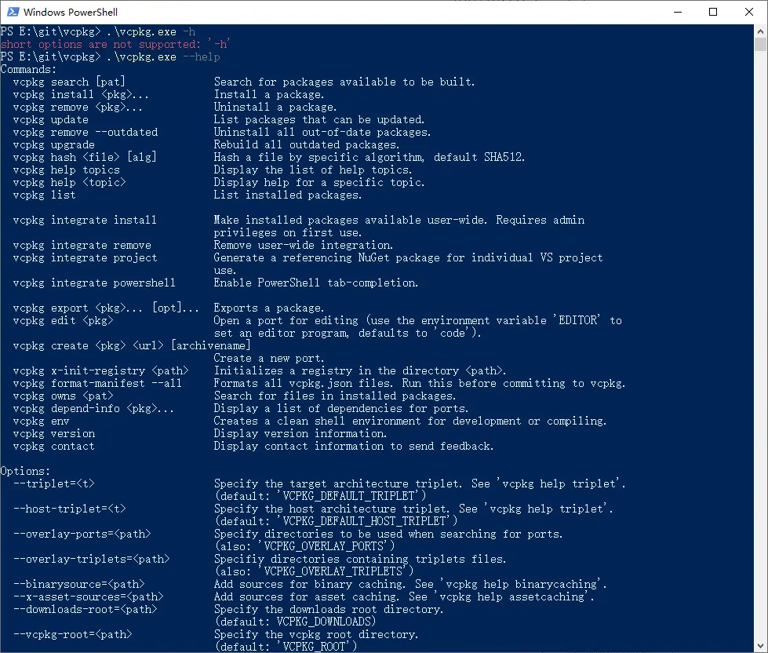
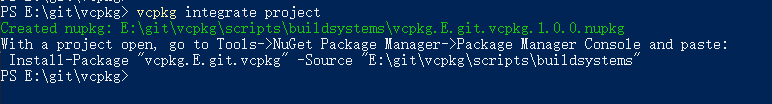

前言
- vcpkg是微软公司开发的一个用于在多个平台上管理C++库的开源工具。它提供了一个简单易用的方式来下载、构建和安装各种C++库，以解决C++开发中的依赖管理问题
- vcpkg支持Windows、macOS和Linux等多个操作系统，为开发人员提供了跨平台的便捷工具来集成和管理C++库。
- 提供了超过2000个C++库，可以一键安装常见的C++库：如Opencv、Qt、openssl、boost、glew、glad等；
- 缺点是，每个库都需要在本地自动编译，有的库安装时间较长。
vcpkg安装
简单版本
1
2
3
4
| git clone https://github.com/Microsoft/vcpkg.git
cd vcpkg
./bootstrap-vcpkg.sh
./vcpkg integrate install
|
下载
git地址：microsoft/vcpkg: C++ Library Manager for Windows, Linux, and MacOS (github.com)
可以使用命令clone下来：
1
| git clone https://github.com/Microsoft/vcpkg.git
|
也可直接在网页上下载zip文件并解压
安装
打开clone 下来的vcpkg目录（或解压的目录）
shift+鼠标右键打开powershell（或cmd）
输入如下命令：
完成后输入
查看输出：

将vcpkg目录加入环境变量中：
环境变量名：VCPKG_ROOT
值： vcpkg的安装目录，我的路径为C:\softwares\vcpkg-master
集成到VS2022项目中
1.在vcpkg文件夹中打开powershell或cmd，输入以下命令：
查看输出：

2.输入命令：
查看输出：
3.打开VS2022项目，打开NuGet包管理器：
将vcpkg添加在程序包源中，如图所示：
4.右键工程， 管理NuGet程序包，程序包源选择vcpkg，点击浏览标签页，选择“vcpkg.E.git.vcpkg”并在右侧窗口点击安装
安装完成后即可使用vcpkg安装的三方库了。
测试使用vcpkg安装boost shared库版，并使用uuid模块进行测试
在vcpkg目录下打开powershell或cmd，输入如下命令安装boost1.81 shared版：
1
| vcpkg install boost:x64-windows
|
vcpkg可支持如下类型：
1
2
3
4
5
6
7
8
9
10
11
12
13
14
15
16
17
18
19
20
21
22
23
24
25
26
27
28
29
30
31
32
33
34
35
36
37
38
39
40
41
42
43
44
45
46
47
48
49
50
51
52
53
54
55
56
57
58
59
60
61
62
63
64
65
66
67
68
69
70
71
72
73
74
| Available architecture triplets:
vcpkg built-in triplets:
arm-uwp
arm64-windows
x64-linux
x64-osx
x64-uwp
x64-windows-static
x64-windows
x86-windows
VCPKG community triplets:
arm-android
arm-ios
arm-linux-release
arm-linux
arm-mingw-dynamic
arm-mingw-static
arm-neon-android
arm-uwp-static-md
arm-windows-static
arm-windows
arm64-android
arm64-ios
arm64-linux-release
arm64-linux
arm64-mingw-dynamic
arm64-osx-dynamic
arm64-osx-release
arm64-osx
arm64-uwp-static-md
arm64-uwp
arm64-windows-static-md
arm64-windows-static-release
arm64-windows-static
arm64ec-windows
armv6-android
ppc64le-linux-release
ppc64le-linux
riscv32-linux-release
riscv32-linux
riscv64-linux-release
riscv64-linux
s390x-linux-release
s390x-linux
wasm32-emscripten
x64-android
x64-freebsd
x64-ios
x64-linux-dynamic
x64-linux-release
x64-mingw-dynamic
x64-mingw-static
x64-openbsd
x64-osx-dynamic
x64-osx-release
x64-uwp-static-md
x64-windows-release
x64-windows-static-md
x64-windows-static-release
x64-xbox-scarlett-static
x64-xbox-scarlett
x64-xbox-xboxone-static
x64-xbox-xboxone
x86-android
x86-freebsd
x86-ios
x86-linux
x86-mingw-dynamic
x86-mingw-static
x86-uwp-static-md
x86-uwp
x86-windows-static-md
x86-windows-static
x86-windows-v120
|
选择自己需要的类型进行安装，可安装多种
等待安装完成：
打开测试项目，并按照上一步对项目安装NuGet程序包源；
项目添加如下代码：
1
2
3
4
5
6
7
8
9
10
11
12
13
14
15
|
#define BOOST_UUID_FORCE_AUTO_LINK
#include <iostream>
#include <boost/uuid/uuid.hpp>
#include <boost/uuid/uuid_generators.hpp>
#include <boost/uuid/uuid_io.hpp>
#include <iostream>
using namespace boost::uuids;
int main()
{
random_generator gen;
uuid id = gen();
std::cout << id << '\n';
}
|
编译并运行：
说明boost库在vcpkg中安装成功，并成功在VS2022工程中使用。
CMake（Clion）+vcpkg
microsoft/vcpkg: C++ Library Manager for Windows, Linux, and MacOS (github.com)
需要注意的是vcpkg在windows默认用MSVC进行编译，所以在项目中使用也应该用MSVC编译器才可以使用
使用 shell 安装软件包
以eigen3安装为例，在vcpkg的根目录下打开power shell，输入
这里在安装成功之后一般会给出包的使用方法提示
1
2
| find_package(Eigen3 CONFIG REQUIRED)
target_link_libraries(main PRIVATE Eigen3::Eigen)
|
简单使用方式
按照官方给出的办法使用包，方便之处在于不需要额外配置头文件和lib的路径，也不需要手动将dll文件放到bin目录下，vcpkg会自动完成这些配置。
如果你没有在环境变量中配置vcpkg的相关变量，而是在CMakeLists中配置vcpkg，需要注意把vcpkg的配置信息放在project之前，如下
1
2
3
4
5
6
7
| cmake_minimum_required(VERSION 3.21.0)
set(VCPKG_ROOT "E:/vcpkg") # 手动设置到你的vcpkg根目录
set(CMAKE_TOOLCHAIN_FILE "${VCPKG_ROOT}/scripts/buildsystems/vcpkg.cmake")
project(MyProject LANGUAGES CXX)
...
|
openssl使用例子
安装openssl
复制里面的内容,后面使用
1
2
| find_package(OpenSSL REQUIRED)
target_link_libraries(main PRIVATE OpenSSL::SSL OpenSSL::Crypto)
|
打开Clion，新建项目，在CmakeLists.txt填入上面内容
1
2
3
4
5
6
7
8
9
10
11
12
13
14
| cmake_minimum_required(VERSION 3.26)
set(VCPKG_ROOT "C:/softwares/vcpkg-master")
set(CMAKE_TOOLCHAIN_FILE "${VCPKG_ROOT}/scripts/buildsystems/vcpkg.cmake")
project(clion_demo)
set(CMAKE_CXX_STANDARD 17)
add_compile_options("$<$<C_COMPILER_ID:MSVC>:/utf-8>")
add_compile_options("$<$<CXX_COMPILER_ID:MSVC>:/utf-8>")
add_executable(${PROJECT_NAME} main.cpp)
find_package(OpenSSL REQUIRED)
target_link_libraries(${PROJECT_NAME} PRIVATE OpenSSL::SSL OpenSSL::Crypto)
|
main.cpp文件如下
1
2
3
4
5
6
7
8
9
10
11
12
13
14
15
16
17
18
19
20
21
22
23
24
25
26
27
28
29
30
31
32
33
34
35
36
37
38
39
40
41
42
43
44
45
46
47
48
49
50
51
52
53
54
55
56
57
58
59
60
61
62
63
64
65
66
67
68
69
70
71
72
73
74
75
76
77
78
79
80
81
82
83
84
85
86
87
88
89
90
91
92
93
94
95
96
97
98
| #include <iostream>
#include <string>
#include <vector>
#include <openssl/rsa.h>
#include <openssl/pem.h>
int test01(){
RSA *rsa = RSA_generate_key(2048, RSA_F4, nullptr, nullptr);
if (!rsa) {
std::cerr << "Failed to generate RSA key pair\n";
return 1;
}
std::string plaintext = "Hello, RSA!";
std::vector<unsigned char> ciphertext(RSA_size(rsa));
int ciphertext_len = RSA_public_encrypt(plaintext.size(),
reinterpret_cast<const unsigned char *>(plaintext.c_str()),
ciphertext.data(), rsa, RSA_PKCS1_PADDING);
if (ciphertext_len == -1) {
std::cerr << "RSA encryption failed\n";
return 1;
}
std::vector<unsigned char> decryptedtext(RSA_size(rsa));
int decryptedtext_len = RSA_private_decrypt(ciphertext_len, ciphertext.data(), decryptedtext.data(), rsa,
RSA_PKCS1_PADDING);
if (decryptedtext_len == -1) {
std::cerr << "RSA decryption failed\n";
return 1;
}
std::cout << "Plaintext: " << plaintext << std::endl;
std::cout << "Ciphertext: ";
for (int i = 0; i < ciphertext_len; ++i) {
printf("%02x", ciphertext[i]);
}
std::cout << std::endl;
std::cout << "Decryptedtext: "
<< std::string(reinterpret_cast<const char *>(decryptedtext.data()), decryptedtext_len) << std::endl;
RSA_free(rsa);
return 0;
}
int test02(){
RSA* rsa = RSA_new();
BIGNUM* exponent = BN_new();
BN_set_word(exponent, RSA_F4);
if (!RSA_generate_key_ex(rsa, 2048, exponent, nullptr)) {
std::cerr << "Failed to generate RSA key pair\n";
return 1;
}
std::string pubkey_filename = "publickey.pem";
FILE* pubkey_file = fopen(pubkey_filename.c_str(), "wb");
if (!pubkey_file) {
std::cerr << "Failed to create public key file\n";
return 1;
}
if (!PEM_write_RSAPublicKey(pubkey_file, rsa)) {
std::cerr << "Failed to write public key to file\n";
return 1;
}
fclose(pubkey_file);
std::string privkey_filename = "privatekey.pem";
FILE* privkey_file = fopen(privkey_filename.c_str(), "wb");
if (!privkey_file) {
std::cerr << "Failed to create private key file\n";
return 1;
}
if (!PEM_write_RSAPrivateKey(privkey_file, rsa, nullptr, nullptr, 0, nullptr, nullptr)) {
std::cerr << "Failed to write private key to file\n";
return 1;
}
fclose(privkey_file);
RSA_free(rsa);
BN_free(exponent);
return 0;
}
int main() {
test01();
test02();
return 0;
}
|
运行结果，表示可以成功使用

使用 vcpkg.json 为你的项目配置第三方依赖
可能你的项目需要在多台电脑上编译，如果在每台电脑上都使用shell手动安装依赖库显然不是优雅的解决办法。又或者你的项目需要固定第三方依赖的版本，而vcpkg的命令行似乎没有给出选择软件包版本的选项，难道只能通过不更新vcpkg来使软件库永远保持在某个版本吗？那如果想对某个依赖的版本降级怎么办？
对于自动安装依赖的问题，vcpkg给出的解决办法是，在你的项目的根目录也就是顶级CMakeLists.txt所在目录创建名为vcpkg.json的配置文件：
1
2
3
4
5
6
7
8
9
10
11
12
13
| {
"name":"MyProject_dependencies",
"version-semver":"1.0.0",
"dependencies":[
"cgal",
"eigen3",
"freeimage",
"glm",
"glew",
"flann",
"lz4"
]
}
|
并在环境变量或CMakeLists中配置变量
1
| set(VCPKG_FEATURE_FLAGS "version") # 用于支持自定义依赖版本
|
如此，不需要在shell手动安装软件包，运行cmake的时候vcpkg会自动将配置文件中的所有依赖安装到你项目的build\vcpkg_installed目录下。
关于vcpkg支持哪些库
使用shell命令
参考
VS2022 + vcpkg 使用 - 知乎 (zhihu.com)
使用VCPKG管理你的第三方依赖 - 知乎 (zhihu.com)
vcpkg install | Microsoft Learn
vcpkg 概述 | Microsoft Learn
microsoft/vcpkg: C++ Library Manager for Windows, Linux, and MacOS (github.com)